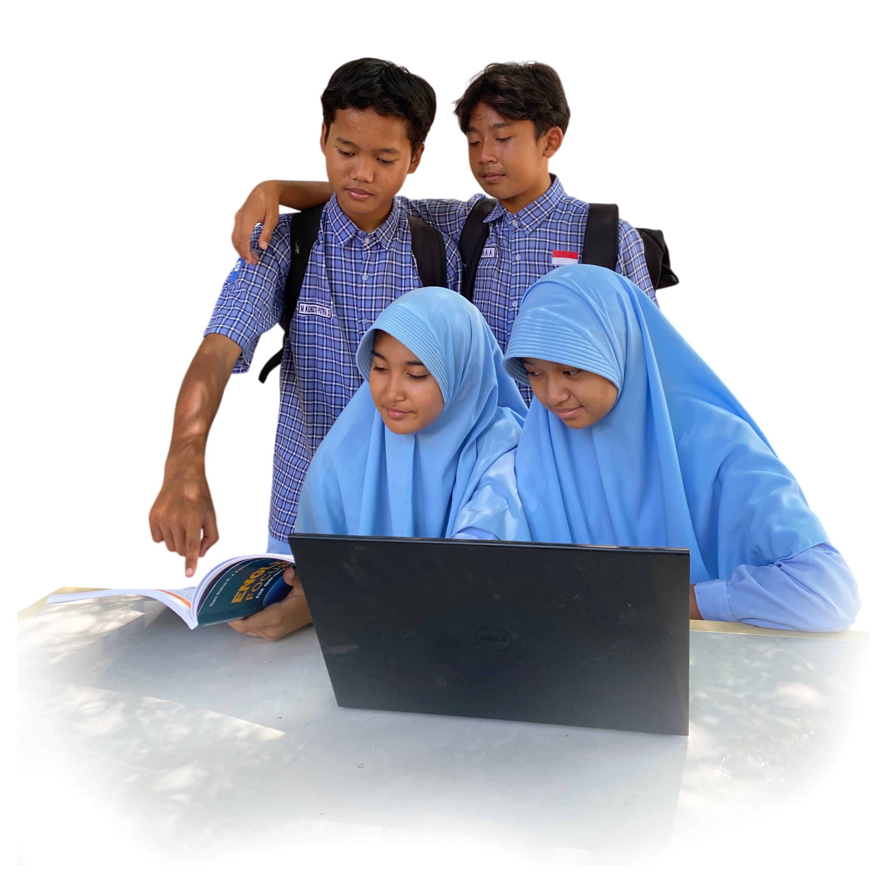

SMP Muhammadiyah 6
Krian
& Technology Based School
SMP Muhammadiyah 6 Krian menyelenggarakan pendidikan unggul berbasis Al-Islam dan Kemuhammadiyahan yang terintegrasi dengan penguasaan sains, teknologi, serta kepemimpinan masa depan.

Akreditasi A+
Unggul & Terpercaya
Program Tahfidz
Bimbingan 3 Juz
Terakreditasi A+ (Unggul)
Berdasarkan penilaian standar nasional pendidikan, SMP Muhammadiyah 6 Krian secara resmi menyandang status Akreditasi A+ (Unggul). Hal ini mencerminkan konsistensi mutu pembelajaran, tata kelola institusi yang transparan, serta fasilitas penunjang modern.
Landasan & Tujuan Pendidikan
Sebagai institusi pendidikan berstandar global, kami memiliki landasan kuat yang menjadi pedoman dalam mewujudkan kualitas pendidikan terbaik bagi seluruh warga sekolah.
"Menjadi lembaga pendidikan Islam unggulan yang melahirkan generasi berakhlak mulia, cerdas berbasis teknologi, serta berwawasan global."
Akhlak Mulia
Karakter Utama
Teknologi
Inovasi Digital
Global
Wawasan Dunia
Islami
Nilai Keimanan
Struktur Organisasi SMP Muhammadiyah 6 Krian
Susunan kepengurusan dan tata kelola institusi yang profesional, transparan, dan akuntabel untuk mewujudkan visi pendidikan unggulan.
Drs. H. Ahmad Muhajir, M.Pd
Kepala Sekolah
Waka Kurikulum
Nurul Huda, S.Pd., M.Pd
AkademikWaka Kesiswaan
M. Farhan, S.Pd., M.M
KesiswaanWaka Sarpras
Ahmad Syaifuddin, S.T
InfrastrukturKoord. Tahfidz
Ustadzah Laila, S.Ag
Koord. Robotik
Ahmad Rifai, S.Kom
Pelatih Tapak Suci
M. Ihsan, S.Pd
Pembina HW
Agus Salim, S.Pd